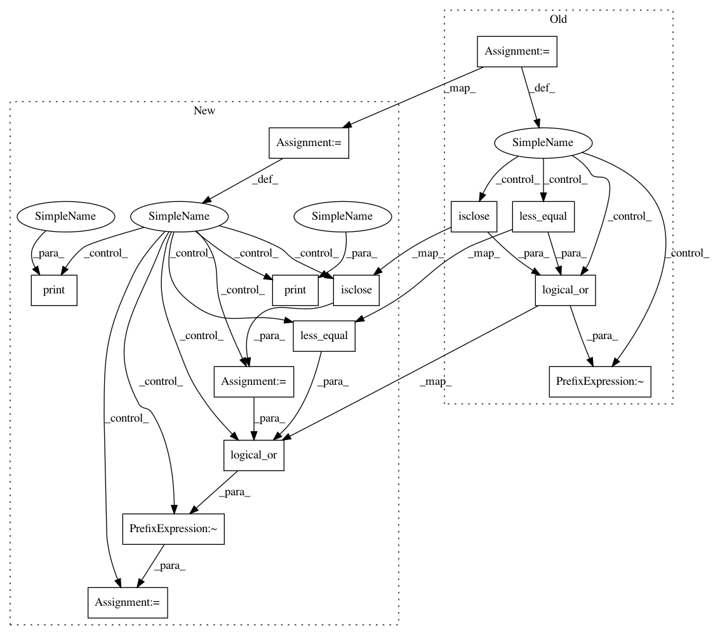

0c9b9ac2bba3a52e5175a24c217b1f3ab8581e08,geomstats/learning/frechet_mean.py,,_default_gradient_descent,#Any#Any#Any#Any#Any#Any#Any#,81
Before Change
einsum_str = "n,nj->j"
if point_type == "matrix":
einsum_str = "n,nij->ij"
points = gs.to_ndarray(points, to_ndim=3)
n_points = gs.shape(points)[0]
if weights is None:
weights = gs.ones((n_points,))
mean = points[0]
if n_points == 1:
return mean
sum_weights = gs.sum(weights)
sq_dists_between_iterates = []
iteration = 0
sq_dist = 0.
var = 0.
while iteration < max_iter:
condition = ~gs.logical_or(
gs.isclose(var, 0.),
gs.less_equal(sq_dist, epsilon * var))
if not (condition or iteration == 0):
break
logs = metric.log(point=points, base_point=mean)
After Change
points = gs.to_ndarray(points, to_ndim=2)
einsum_str = "n,nj->j"
if point_type == "matrix":
points = gs.to_ndarray(points, to_ndim=3)
einsum_str = "n,nij->ij"
n_points = gs.shape(points)[0]
if weights is None:
weights = gs.ones((n_points,))
mean = points[0]
if n_points == 1:
return mean
sum_weights = gs.sum(weights)
sq_dists_between_iterates = []
iteration = 0
sq_dist = 0.
var = 0.
while iteration < max_iter:
print(var)
print(sq_dist)
var_is_0 = gs.isclose(var, 0.)
sq_dist_is_small = gs.less_equal(sq_dist, epsilon * var)
condition = ~gs.logical_or(var_is_0, sq_dist_is_small)
if not (condition or iteration == 0):
break
logs = metric.log(point=points, base_point=mean)
In pattern: SUPERPATTERN
Frequency: 3
Non-data size: 14
Instances
Project Name: geomstats/geomstats
Commit Name: 0c9b9ac2bba3a52e5175a24c217b1f3ab8581e08
Time: 2020-04-17
Author: ninamio78@gmail.com
File Name: geomstats/learning/frechet_mean.py
Class Name:
Method Name: _default_gradient_descent
Project Name: geomstats/geomstats
Commit Name: cfcc08085ddd20f6b6c9244960f004509eab4d4c
Time: 2020-04-16
Author: ninamio78@gmail.com
File Name: geomstats/learning/frechet_mean.py
Class Name:
Method Name: _default_gradient_descent
Project Name: geomstats/geomstats
Commit Name: fa0845c7e95bb8fcbe00821b51ba95d40ab21a5b
Time: 2020-04-17
Author: ninamio78@gmail.com
File Name: geomstats/learning/frechet_mean.py
Class Name:
Method Name: _default_gradient_descent